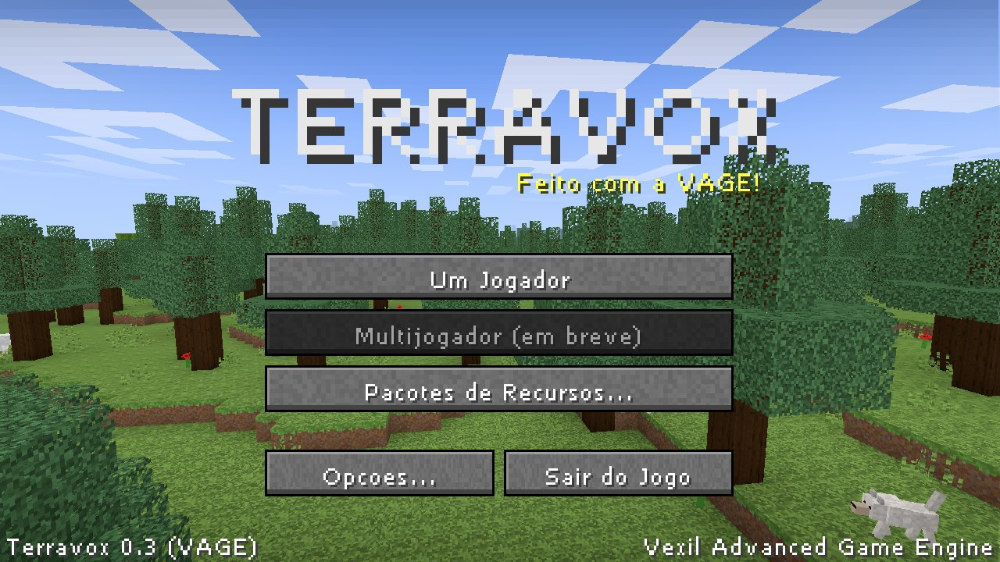
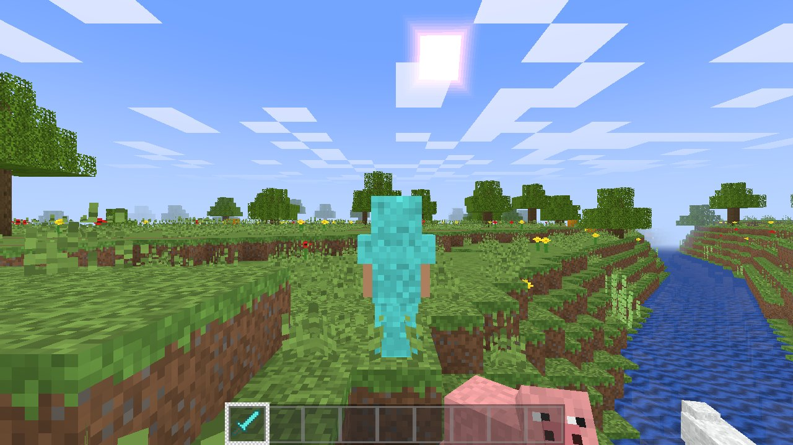
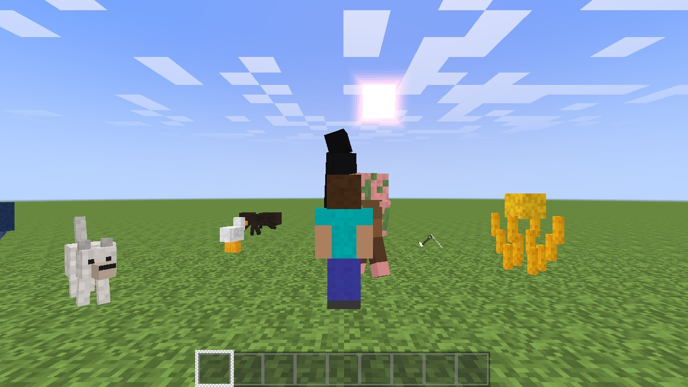
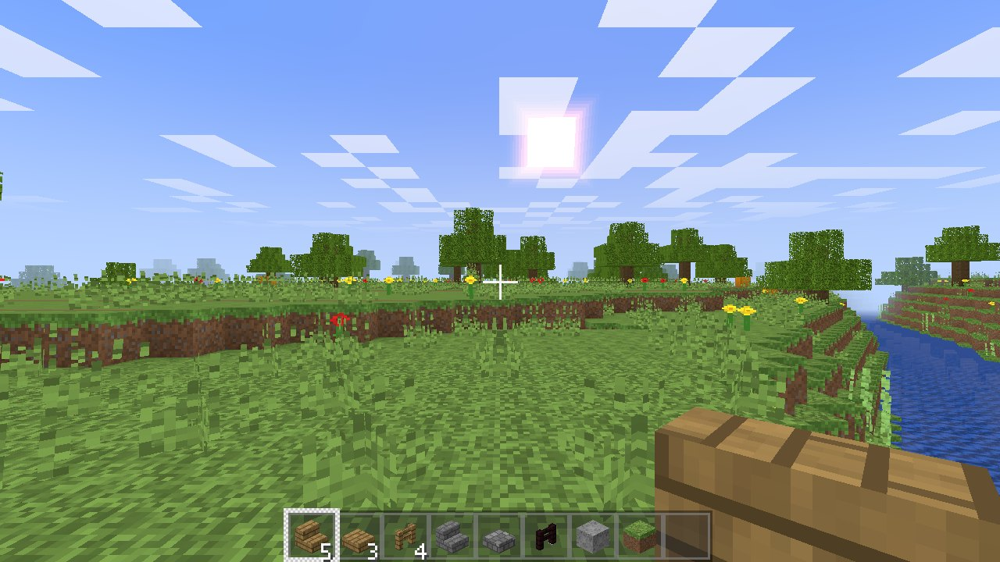
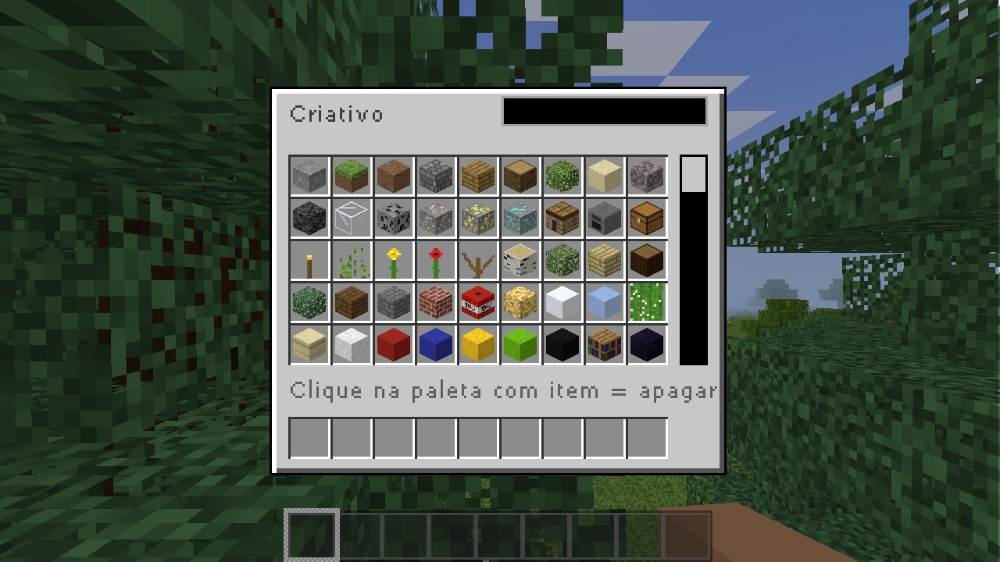
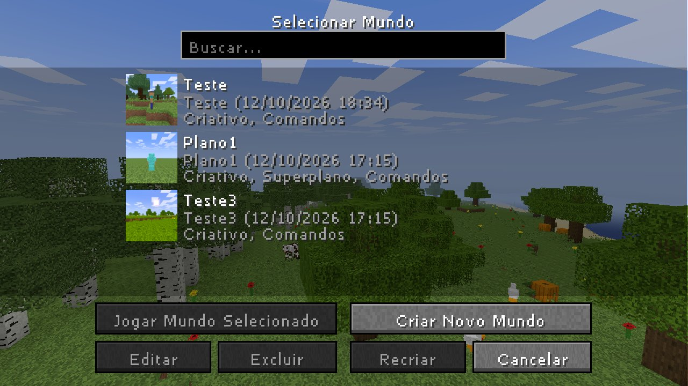

Mundo infinito
20 biomas, cavernas, rios, minérios e 6 tipos de árvore. Tipos Padrão, Superplano, Biomas Grandes e Amplificado, com seed.
Um mundo de blocos infinito para explorar, construir e sobreviver. Feito do zero em C++20 e Vulkan, com a engine própria VAGE (Vexil Advanced Game Engine).
Tudo o que você espera de um jogo de blocos: mundo gerado sem fim, três dimensões, mobs, sobrevivência e criativo, num executável único de ~24 MB.
20 biomas, cavernas, rios, minérios e 6 tipos de árvore. Tipos Padrão, Superplano, Biomas Grandes e Amplificado, com seed.
Acenda o portal de obsidiana, enfrente ghasts e blazes, encontre a fortaleza e derrote o Dragão do Ender.
Vida, fome e saturação, afogamento, natação, dano de queda e lava, armaduras, camas, cultivo e fornalhas.
Voo e inventário com abas como no original: construção, coloridos, naturais, ferramentas, combate, comida e ovos geradores.
Porcos, vacas, ovelhas, galinhas, lobos domesticáveis, zumbis, esqueletos, creepers, endermen e mais, com procriação.
Resource packs (texturas e sons) e shader packs em GLSL, compilados na hora. Use os geradores deste site para começar.
Capturas tiradas do jogo, com as texturas padrão. Instale um resource pack para mudar o visual.






Um único arquivo: texturas, sons e shaders já vão dentro do .exe. Não precisa instalar.
Terravox.exe e coloque numa pasta só dele (ex.: Jogos\Terravox).net\vexill\vage\terravox, criada ao lado do executável.Windows 10/11, 64 bits
Os mesmos do jogo original. Sensibilidade, inversão e entrada bruta do mouse ficam em Opções → Controles.
| Tecla | Ação |
|---|---|
| WASD / mouse | Mover / olhar |
| Espaço | Pular, nadar (2× no criativo = voar) |
| Shift / Ctrl | Agachar / correr |
| Botão esquerdo | Quebrar / atacar |
| Botão direito | Usar, colocar blocos, comer |
| Botão do meio | Pegar bloco |
| Tecla | Ação |
|---|---|
| E | Inventário |
| 1–9 / roda | Barra de itens |
| Q | Soltar item |
| T ou / | Chat e comandos |
| F1 F2 F3 F5 | Esconder HUD, captura, depuração, câmera |
| Esc | Pausa |
O Terravox lê packs de pastas comuns, sem compilar nada. Os geradores abaixo montam um pack de exemplo pronto para você baixar, instalar e continuar editando.
Ajuste cor, contraste, saturação, temperatura, neblina e o vento nas folhas e na água, com prévia ao vivo. Baixe o código GLSL pronto e edite à vontade.
Navegue por todas as texturas do jogo, aplique filtros em lote, redesenhe no editor de pixels ou envie seus PNGs. O zip sai só com o que você mudou.
Pasta em shaders/<nome>/ com qualquer um destes arquivos GLSL. O que faltar usa o shader do jogo. Se não compilar, o jogo volta para o padrão e mostra o erro no log.
net/vexill/vage/terravox/shaders/
└── MeuShader/
├── pack.txt descrição (1ª linha)
├── block.frag cor do terreno e das entidades
├── terrain.vert vértices (vento, ondas)
├── entity.vert
├── sky.vert / sky.frag
└── ui.vert / ui.frag
Ative em Opções → Shaders.
Pasta em resourcepacks/<nome>/ (ou com uma subpasta assets/) só com os arquivos que você quer trocar. Os caminhos são os do Minecraft, então texturas de lá funcionam direto.
net/vexill/vage/terravox/resourcepacks/
└── MeuPack/
├── pack.txt descrição
├── textures/block/stone.png qualquer resolução
├── textures/item/apple.png
├── textures/entity/pig/pig.png
└── sounds/dig/stone1.ogg .ogg ou .wav
Ative em Opções → Pacotes de Recursos. A ordem define a prioridade.
stone1.ogg, stone2.ogg…) são sorteados a cada vez.Global. Veja os comentários em terrain.vert.